Einrichten des Add-Ons für die elektronische Rechnungsstellung
Important
Dynamics 365 for Finance and Operations hat sich zu speziell entwickelten Anwendungen entwickelt, mit denen Sie bestimmte Geschäftsfunktionen verwalten können. Weitere Informationen zu diesen Änderungen finden Sie im Dynamics 365-Lizenzierungshandbuch.
Bei der Einrichtung der Add-On-Funktion für die elektronische Rechnungsstellung wird die erforderliche Konfiguration über die RCS-Umgebung (Regulatory Configuration Services) erstellt und auf dem Add-On-Server für die elektronische Rechnungsstellung veröffentlicht. Mit der Einrichtung können Sie die konfigurierbaren Regeln erstellen, die es dem Add-On für die elektronische Rechnungsstellung ermöglichen, ein sicheres Protokoll über das Internet zu verwenden, um über Webdienste mit einer Drittanbieterentität zu kommunizieren und Daten auszutauschen.
Die Konfigurierbarkeit basiert auf der Konfiguration des Formats der elektronischen Berichterstattung (EB), um Inhalte zu erstellen, die über digitale Dateien gesendet und empfangen werden. Sie basiert auch auf der Orchestrierung von Kommunikationsaktionen, um Anforderungen an Webdienste von Drittanbietern zu senden und Antworten von diesen zu empfangen, ohne dass Sie Code schreiben müssen.
Übersicht
„Die Add-On-Funktion für die elektronische Rechnungsstellung“ ist der generische Name für die Ressource, die so konfiguriert und veröffentlicht ist, dass sie den Add-On-Server für die elektronische Rechnungsstellung verwendet. Das Einrichten der Funktion umfasst unter anderem die Verwendung von EB-Konfigurationsformaten zum Erstellen konfigurierbarer Export- und Importdateien sowie die Verwendung von Aktionen und Aktionsabläufen, um die Erstellung konfigurierbarer Regeln zum Senden von Anforderungen, zum Importieren von Antworten und zum Analysieren des Inhalts der Antworten zu ermöglichen.
Die folgende Abbildung zeigt die Hauptkomponenten einer Add-On-Funktion für die elektronische Rechnungsstellung.
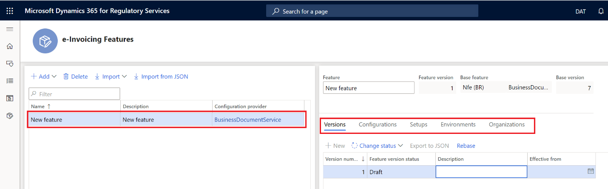
Aufgrund unterschiedlicher Rechnungsformate und Aktivitätsabläufe kann die Einrichtung der Funktionen je nach Land oder Region oder je nach Geschäftsanforderungen variieren.
Einrichten der Add-On-Funktion für die elektronische Rechnungsstellung
Der Einrichtungsprozess muss in Ihrer RCS-Umgebung abgeschlossen sein. Befolgen Sie diese Schritte, um eine neue Add-On-Funktion für die elektronische Rechnungsstellung zu erstellen.
Melden Sie sich bei Ihrer RCS-Umgebung an.
Wählen Sie im Arbeitsbereich Globalisierungsfunktionen im Abschnitt Funktionen die Kachel Add-On für die elektronische Rechnungsstellung aus.
Wählen Sie auf der Seite Add-On-Funktionen für die elektronische Rechnungsstellung die Option Importieren aus, um die EB-Datenmodellkonfiguration aus dem globalen Repository zu importieren.
Wählen Sie Hinzufügen aus, um eine Add-On-Funktion für die elektronische Rechnungsstellung zu erstellen. Sie können die Funktion entweder von Grund auf neu erstellen oder aus einer vorhandenen Add-On-Funktion für die elektronische Rechnungsstellung ableiten.
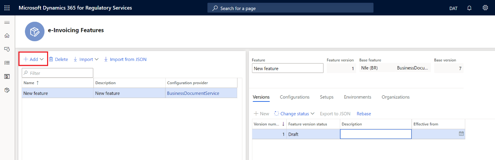
Note
Wenn Sie eine neue Add-On-Funktion für die elektronische Rechnungsstellung erstellen, hat diese eine Versionsnummer und der Standardstatus ist auf Entwurf festgelegt.
Varianten
Konfigurationen enthalten die EB-Formatkonfigurationen, die für Transformationen und zum Erstellen der Dateien erforderlich sind, die während der Kommunikation mit Webdiensten von Drittanbietern ausgetauscht werden. Eine Add-On-Funktion für die elektronische Rechnungsstellung kann so viele EB-Dateiformatkonfigurationen aufweisen, wie erforderlich sind, je nach den vom Webdienstanbieter bereitgestellten technischen Integrationsspezifikation.
Befolgen Sie diese Schritte, um der Add-On-Funktion für die elektronische Rechnungsstellung EB-Formate hinzuzufügen.
Wählen Sie auf der Seite Add-On-Funktionen für die elektronische Rechnungsstellung auf der Registerkarte Konfigurationen die Option Hinzufügen aus, um EB-Dateiformatkonfigurationen für die Add-On-Funktion für die elektronische Rechnungsstellung hinzuzufügen.
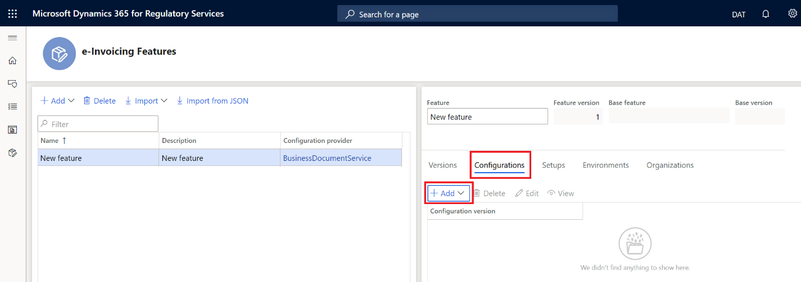
Note
Wenn Sie eine Add-On-Funktion für die elektronische Rechnungsstellung von Grund auf neu erstellen, müssen Sie alle EB-Dateiformatkonfigurationen manuell hinzufügen. Wenn Sie eine Add-On-Funktion für die elektronische Rechnungsstellung von einer vorhandenen Funktion ableiten, werden die EB-Dateiformatkonfigurationen automatisch erstellt, da sie von der ursprünglichen Add-On-Funktion für die elektronische Rechnungsstellung geerbt werden.
Wählen Sie Bearbeiten aus, um die Seite Formatdesigner zu öffnen, auf der Sie die Konfiguration des EB-Dateiformats bearbeiten können.
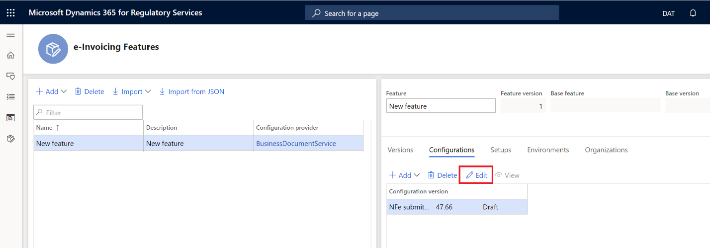
Note
Während Sie das Format bearbeiten, wird der Status der Konfigurationsversion auf Entwurf festgelegt.
Verwenden Sie die Seite Formatdesigner, um die Dateiformatkonfiguration zu bearbeiten. Weitere Informationen finden Sie unter Erstellen elektronischer Berichterstellungskonfigurationen.
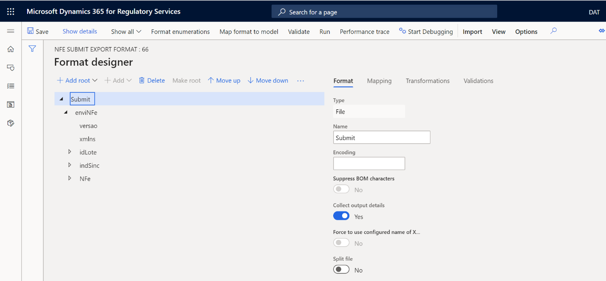
Funktionseinrichtungen
Funktionseinrichtungen beinhalten die Regeln für Kommunikation und Sicherheit mit dem Webdienst eines Drittanbieters. Eine Add-On-Funktion für die elektronische Rechnungsstellung kann basierend auf der Geschäftsregel, die Sie umsetzen möchten, so viele Funktionseinrichtungen haben, wie erforderlich sind.
Befolgen Sie diese Schritte, um der Add-On-Funktion für die elektronische Rechnungsstellung Funktionseinrichtungen hinzuzufügen.
Wählen Sie auf der Seite Add-On-Funktionen für die elektronische Rechnungsstellung auf der Registerkarte Einrichtungen die Option Hinzufügen aus, um Funktionseinrichtungen zur Add-On-Funktion für die elektronische Rechnungsstellung hinzuzufügen.
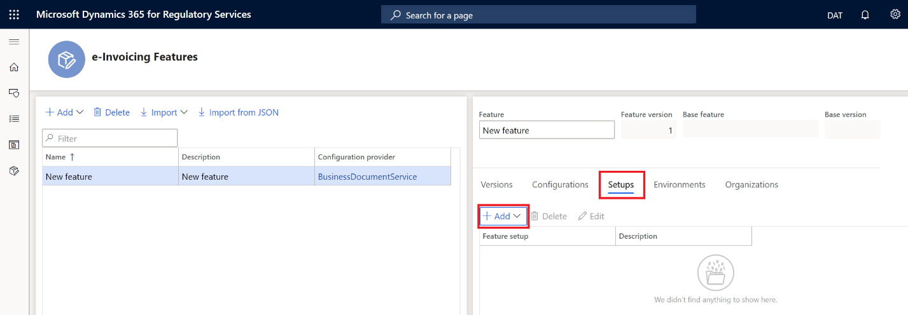
Note
Wenn Sie eine Add-On-Funktion für die elektronische Rechnungsstellung von Grund auf neu erstellen, müssen Sie alle erforderlichen Funktionseinrichtungen manuell hinzufügen. Wenn Sie eine Add-On-Funktion für die elektronische Rechnungsstellung von einer vorhandenen Funktion ableiten, werden alle Funktionseinrichtungen automatisch erstellt, da sie von der ursprünglichen Add-On-Funktion für die elektronische Rechnungsstellung geerbt werden.
Wählen Sie Bearbeiten aus, um die Einrichtung der Funktionsversion zu bearbeiten.
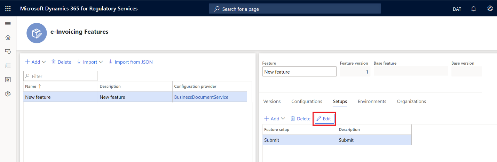
Verwenden Sie die Seite Einrichtung der Funktionsversion zum Konfigurieren von Aktionen, Anwendbarkeitsregeln und Variablen.
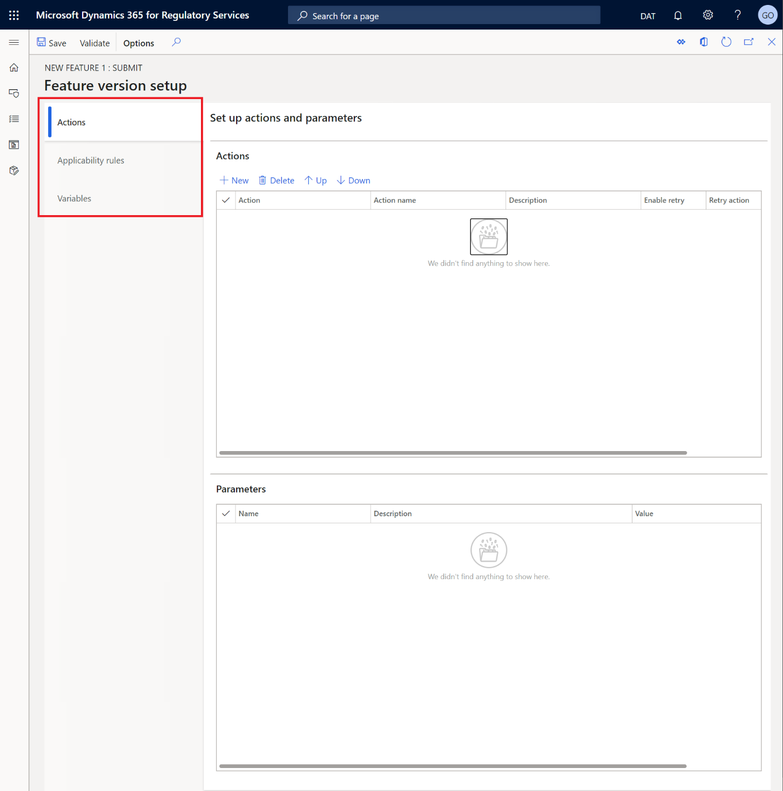
Aktionen
Aktionen sind eine vordefinierte Liste von Vorgängen, die in sequenzieller Reihenfolge ausgeführt werden. Diese Liste enthält die Aufschlüsselung der Schritte, die für die vollständige Ausführung der Add-On-Funktion für die elektronische Rechnungsstellung erforderlich sind. Die Aktionen können in derselben Add-On-Funktion für die elektronische Rechnungsstellung die Kommunikation in beide Richtungen umfassen: Senden einer Anforderung für ein Ziel sowie Empfangen einer Antwort und Analysieren Ihres Inhalts.
Jede Aktion enthält eine vordefinierte Liste von Parametern, die erforderlich sind, damit die Aktion ihren Zweck erfüllt. Optional können zusätzliche Parameter bereitgestellt werden.
Inforegister „Aktionen“
Führen Sie auf der Seite Einrichtung der Funktionsversionen auf der Registerkarte Aktionen auf dem Inforegister Aktionen einen oder beide der folgenden Schritte aus, um Aktionen zu verwalten:
- Wählen Sie Neu oder Löschen aus, um neue Aktionen hinzuzufügen oder vorhandene Aktionen zu löschen.
- Wählen Sie Nach oben oder Nach unten aus, um ausgewählte Aktionen im Raster nach oben oder unten zu verschieben und dadurch die Reihenfolge zu ändern, in der sie ausgeführt werden. Aktionen werden in der Reihenfolge ausgeführt, in der sie im Raster von oben nach unten angezeigt werden.
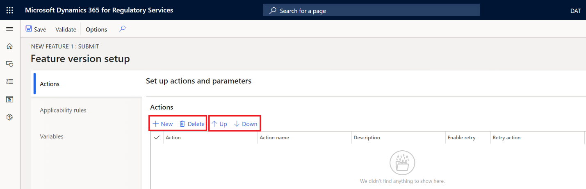
In der folgenden Tabelle werden die Felder beschrieben, die auf dem Inforegister Aktionen verfügbar sind.
| Feld | Beschreibung |
|---|---|
| Vorgang | Es gibt acht vordefinierte Aktionen.
|
| Aktivitätsname | Der Name der Aktion und ihre Ausführungsreihenfolge. |
| Beschreibung | Eine Beschreibung der Aktion ein. |
| Wiederholung aktivieren | Ein aktiviertes Kontrollkästchen zeigt an, dass die Aktion wiederholt werden kann, wenn der vorherige Versuch nicht erfolgreich war. |
| Aktivität wiederholen | Im Falle eines erneuten Versuchs die Aktion, von der aus der erneute Versuch gestartet wird. Der Wiederholungsversuch endet dann mit der aktuellen Aktion (einschließlich Wiederholungsversuch). Für Aktionen mit den Parametern Minimaler Backoff und Maximaler Backoff geben diese die minimale und die maximale Anzahl von Wiederholungsversuchen an. |
Inforegister „Parameter“
Das Inforegister Parameter enthält die Parameter für die Aktion, die auf dem Inforegister Aktionen ausgewählt ist.
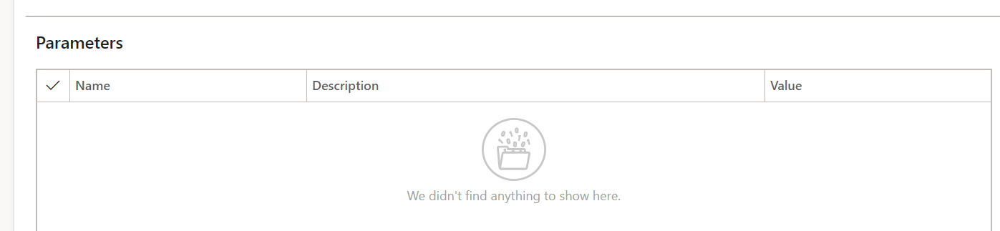
In der folgenden Tabelle werden die Felder beschrieben, die auf dem Inforegister Parameter verfügbar sind.
| Feld | Beschreibung |
|---|---|
| Name | Eine vordefinierte Liste von Parametern. Weitere Informationen finden Sie im Abschnitt Liste der Parameter nach Aktion. |
| Beschreibung | Eine Beschreibung des Parameters. |
| Wert | Der Wert des Parameters. |
Liste der Parameter nach Aktion
Die verfügbaren Parameter variieren je nach der Aktion, die auf dem Inforegister Aktionen ausgewählt ist.
Aktion: Dokument signieren
| Parameter | Beschreibung |
|---|---|
| Eingabedatei | Die eingegebene XML-Dokumentdatei, die mit einer elektronischen Signatur signiert werden muss. |
| Zertifikatname | Der Name des gespeicherten Zertifikats. |
| Signaturtyp | Der Typ der zu verwendenden Signatur. |
| Name der Signaturmethode | Der Name der Signaturmethode, mit der eine elektronische Signatur generiert wird. |
| Name der Digest-Methode | Die Digest-Methode, mit der eine Digest-Zeichenfolge in der digitalen Signatur generiert wird. |
| Name der Kanonisierungsmethode | Die Kanonisierungsmethode, die zur Berechnung des Signatur-Hash verwendet wird. |
| Name des Referenzattributs | Der Attributname, der angibt, wo die Referenz-ID in das Signaturelement eingefügt werden soll. |
| Name des zu signierenden Elements | Der Name des XML-Elements im Dokument, das mit einer elektronischen Signatur signiert werden muss. Wenn kein Element angegeben ist, wird der Dokumentenstamm signiert. |
| Name des Elements, in das die Signatur eingefügt werden soll | Der Name des XML-Elements, in das eine generierte digitale Signatur eingefügt werden soll. Wenn kein Element angegeben ist, wird die Signatur in den Dokumentenstamm eingefügt. |
| XLST-Datei mit Digest-Transformation | Die XSLT-Datei (Extensible Stylesheet Language Transformations), die Digest-Transformationsregeln zum Generieren der Digest-Zeichenfolge für eine elektronische Signatur enthält. |
| Pfad zum Einfügen der Digest-Zeichenfolge | Der Pfad im Format <elementName>.<Attribute.Path> des Speicherorts, an dem die generierte Digest-Zeichenfolge eingefügt werden muss. |
| Speicherort der Zertifikatnummer | Der Name des Elements und Attributs, an dem die Zertifikatsnummer abgelegt werden soll. |
| Speicherort der Zertifikatdaten | Der Name des Elements und Attributs, an dem die Zertifikatdaten (base64) eingefügt werden müssen. |
| Zertifikatnummer im ASCII-Format | Ein Wert, der angibt, ob die Nummer des Zertifikats im ASCII-Format codiert ist. |
Aktion: FileStoreActionName
| Parameter | Beschreibung |
|---|---|
| Eingabedatei | Die zu speichernde Eingabedatei. |
Aktion: Transformieren des Dokuments
| Parameter | Beschreibung |
|---|---|
| Eingabedatei | Die Quelldatei, die die Daten bereitstellt, die für die Aktion ausgeführt werden müssen. |
| Planungsrichtung | Ein Wert, der angibt, ob das Importformat oder das Exportformat verwendet werden soll. |
| Konfigurationskennung | Das Format, das ausgeführt werden soll. |
| Konfigurationsversion | Wenn keine Konfigurationsversion angegeben ist, wird die neueste Version verwendet. |
| Integrationspunkt der Konfiguration | Die Quelldatei, die Daten für die Berichtslaufzeit bereitstellt. |
Aktion: Verarbeiten der Antwort
| Parameter | Beschreibung |
|---|---|
| Eingabedatei | Die zu analysierende Antwort. |
| Berichtskonfigurationsliste | Eine Liste von Konfigurationen, mit denen Antworten analysiert werden. |
Aktion: Aufrufen des REST-Webdienstes
| Parameter | Beschreibung |
|---|---|
| Webdienst-URL | Die URL, an die Anforderungen gesendet werden sollen. |
| Lautzeitüberschreitung der Webanforderung | Die maximale Zeit (in Millisekunden), die auf eine Antwort des Webdienstes gewartet wird. |
| Vorgangstyp anfordern | Der Typ der HTTP-Anforderungsoperation (z. B. GET, POST oder DELETE). |
| Zertifikatnamen | Die Zertifikatnamen. |
| Codierung des Antwortkörpers | Die erwartete Codierung des HTTP-Antwortkörpers, damit dieser korrekt decodiert werden kann. |
| Inhaltstyp der HTTP-Anforderung | Die Header-Eingabe zum Inhaltstyp für HTTP-Anforderungen. |
| Inhaltskörper der HTTP-Anforderung | Der HTTP-Anforderungstext. (Der Körper kann leer sein.) |
| Abfragewerte für HTTP-Parameter | Parameterabfragewerte, mit denen die URL mit variablen Parametern gefüllt wird. |
| Anforderungsroute | Der Routenpfad für die HTTP-Anforderung. Die variablen Parameter können in der Notation {paramName} geschrieben werden. Ein Beispiel: "api/{id}/submit". |
| Routenparameterliste | Die Routenparameter in Schlüsselwertnotation, mit denen Variablen in die Route eingefügt werden. |
| Benutzerdefinierte HTTP-Header | Die benutzerdefinierten HTTP-Header, die in die Anforderung eingefügt werden sollen. |
| HTTP-Anforderungscookies | Eine Liste von Cookies in Schlüsselwertnotation, die in die HTTP-Cookie-Header-Anforderung eingefügt werden sollen. |
| Sicherheitsprotokoll | Das Sicherheitsprotokoll, das für HTTP-Anforderungen zur Kommunikation mit dem Server verwendet werden soll. (Standardmäßig wird Transport Layer Security [TLS] 1.2 verwendet.) |
Aktion: Aufrufen des mexikanischen PAC-Dienstes
| Parameter | Beschreibung |
|---|---|
| Eingabedatei | Die Datei, die XML-Daten enthält, die als Methodeneingabeparameter an den Webdienst gesendet werden. |
| URL-Adresse | Die Webdienstadresse (Endpunkt). |
| Name der Webmethode (Aktion) | Der Name der Webmethode (Aktion), die ausgeführt werden muss. |
| Bescheinigungen | Die Zertifikatkette, die für die Clientauthentifizierung durch den Webdienst erforderlich ist. Das Clientzertifikat sollte das letzte Zertifikat in der Kette sein. Die Stamm- und Zwischenzertifikate sollten an erster Stelle stehen. |
| Lautzeitüberschreitung der Webanforderung | Die maximale Zeit (in Millisekunden), die auf eine Antwort des Webdienstes gewartet wird. |
| Wiederholungsintervall | Das Intervall zwischen den Versuchen, eine Antwort vom Webdienst abzurufen und zu empfangen. Wenn kein Intervall angegeben ist, werden keine weiteren Wiederholungsversuche durchgeführt, nachdem der erste Aufruf nicht erfolgreich war. |
| Anzahl von Wiederholungen | Die maximale Anzahl von Wiederholungsversuchen zum Aufrufen und Abrufen einer Antwort vom Webdienst. |
| Wiederholen bis | Die maximale Zeit (in Millisekunden), in der Wiederholungsaufrufe fortgesetzt werden können. |
| Minimaler Backoff | Die minimale Backoff-Rate für die exponentielle Berechnung von Wiederholungsintervallen. |
| Maximaler Backoff | Die maximale Backoff-Rate für die exponentielle Berechnung von Wiederholungsintervallen. |
| Sicherheitsprotokoll | Das Sicherheitsprotokoll, das für HTTP-Anforderungen zur Kommunikation mit dem Server verwendet werden soll. (Standardmäßig wird TLS 1.2 verwendet.) |
Aktion: Aufrufen des brasilianischen SEFAZ-Dienstes
| Parameter | Beschreibung |
|---|---|
| Eingabedatei | Die Datei, die XML-Daten enthält, die als Methodeneingabeparameter an den Webdienst gesendet werden. |
| URL-Adresse | Die Webdienstadresse (Endpunkt). |
| Name der Webmethode (Aktion) | Der Name der Webmethode (Aktion), die ausgeführt werden muss. |
| Bescheinigungen | Die Zertifikatkette, die für die Clientauthentifizierung durch den Webdienst erforderlich ist. Das Clientzertifikat sollte das letzte Zertifikat in der Kette sein. Die Stamm- und Zwischenzertifikate sollten an erster Stelle stehen. |
| Lautzeitüberschreitung der Webanforderung | Die maximale Zeit (in Millisekunden), die auf eine Antwort des Webdienstes gewartet wird. |
| Wiederholungsintervall | Das Intervall zwischen den Versuchen, eine Antwort vom Webdienst abzurufen und zu empfangen. Wenn kein Intervall angegeben ist, werden keine weiteren Wiederholungsversuche durchgeführt, nachdem der erste Aufruf nicht erfolgreich war. |
| Anzahl von Wiederholungen | Die maximale Anzahl von Wiederholungsversuchen zum Aufrufen und Abrufen einer Antwort vom Webdienst. |
| Wiederholen bis | Die maximale Zeit (in Millisekunden), in der Wiederholungsaufrufe fortgesetzt werden können. |
| Minimaler Backoff | Die minimale Backoff-Rate für die exponentielle Berechnung von Wiederholungsintervallen. |
| Maximaler Backoff | Die maximale Backoff-Rate für die exponentielle Berechnung von Wiederholungsintervallen. |
| Sicherheitsprotokoll | Das Sicherheitsprotokoll, das für HTTP-Anforderungen zur Kommunikation mit dem Server verwendet werden soll. (Standardmäßig wird TLS 1.2 verwendet.) |
Aktion: Aufrufen des italienischen SDI-Dienstes
| Parameter | Beschreibung |
|---|---|
| Eingabedatei | Die Datei, die XML-Daten enthält, die als Methodeneingabeparameter an den Webdienst gesendet werden. |
| URL-Adresse | Die Webdienstadresse (Endpunkt). |
| Name der Webmethode (Aktion) | Der Name der Webmethode (Aktion), die ausgeführt werden muss. |
| Bescheinigungen | Die Zertifikatkette, die für die Clientauthentifizierung durch den Webdienst erforderlich ist. Das Clientzertifikat sollte das letzte Zertifikat in der Kette sein. Die Stamm- und Zwischenzertifikate sollten an erster Stelle stehen. |
| Lautzeitüberschreitung der Webanforderung | Die maximale Zeit (in Millisekunden), die auf eine Antwort des Webdienstes gewartet wird. |
| Wiederholungsintervall | Das Intervall zwischen den Versuchen, eine Antwort vom Webdienst abzurufen und zu empfangen. Wenn kein Intervall angegeben ist, werden keine weiteren Wiederholungsversuche durchgeführt, nachdem der erste Aufruf nicht erfolgreich war. |
| Anzahl von Wiederholungen | Die maximale Anzahl von Wiederholungsversuchen zum Aufrufen und Abrufen einer Antwort vom Webdienst. |
| Wiederholen bis | Die maximale Zeit (in Millisekunden), in der Wiederholungsaufrufe fortgesetzt werden können. |
| Minimaler Backoff | Die minimale Backoff-Rate für die exponentielle Berechnung von Wiederholungsintervallen. |
| Maximaler Backoff | Die maximale Backoff-Rate für die exponentielle Berechnung von Wiederholungsintervallen. |
| Sicherheitsprotokoll | Das Sicherheitsprotokoll, das für HTTP-Anforderungen zur Kommunikation mit dem Server verwendet werden soll. (Standardmäßig wird TLS 1.2 verwendet.) |
Regeln für die Anwendbarkeit
Mit den Anwendbarkeitsregeln können Sie logische Regeln erstellen, die den Nutzungskontext für die Funktionseinrichtung bestimmen. Die Übereinstimmung zwischen dem Kontext des Geschäftsdokuments, das zur Verarbeitung gesendet wird, und den Kriterien für die Anwendbarkeitsregel bestimmt somit, welche Add-On-Funktion für die elektronische Rechnungsstellung zur Verarbeitung dieser Übermittlung verwendet wird.
Einrichten von Anwendbarkeitsregeln
Wählen Sie auf der Seite Einrichtung der Funktionsversion auf der Registerkarte Anwendbarkeitsregeln die Option Neu aus, um eine Anwendbarkeitsregel hinzuzufügen.
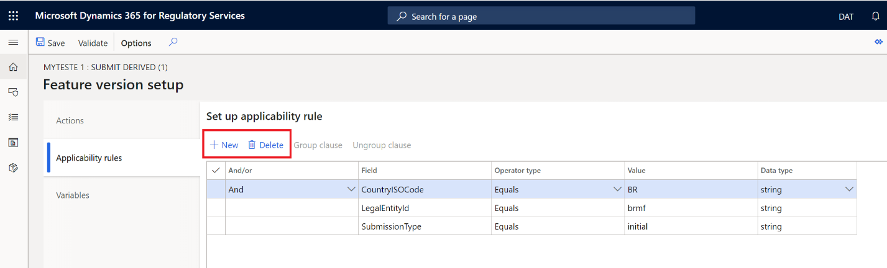
Wählen Sie im Raster die Klauseln aus, die gruppiert werden sollen.
Wählen Sie Klausel gruppieren aus.
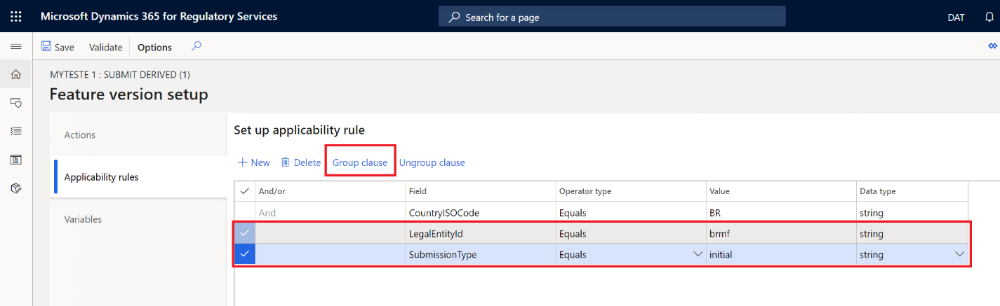
Wenn Klauseln gruppiert werden, wird dem Raster eine neue Spalte hinzugefügt. Diese Spalte gibt den logischen Operator für die gruppierten Klauseln an.
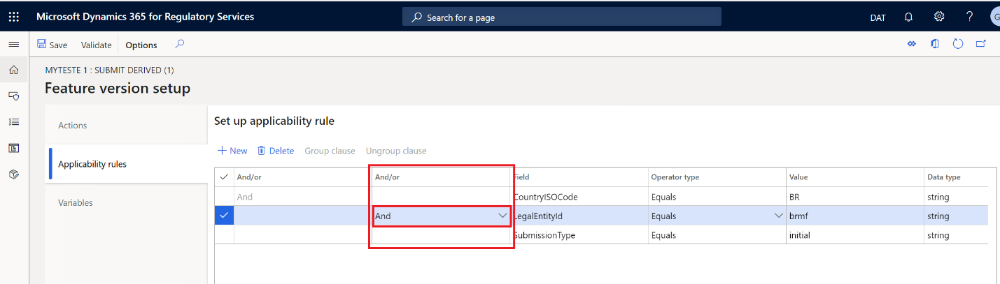
Um die Gruppierung von Klauseln aufzuheben, wählen Sie die gruppierten Klauseln aus, für die die Gruppierung aufgehoben werden soll, und wählen Sie dann Gruppierung für Klausel aufheben.
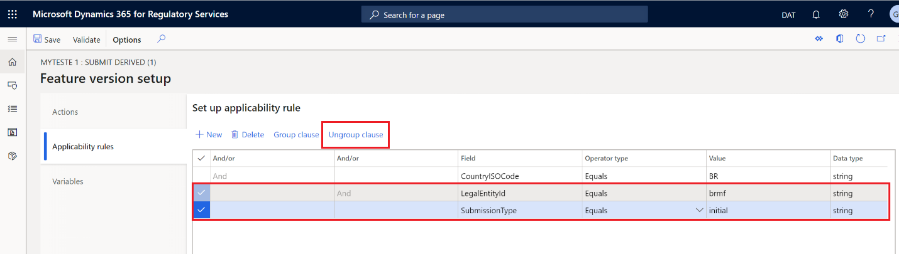
Note
Wenn Sie die Gruppierung für eine Klausel aufheben, beginnen Sie immer mit der innersten Gruppierungsebene.
In der folgenden Tabelle werden die Felder beschrieben, die auf der Registerkarte Anwendbarkeitsregeln verfügbar sind.
| Feld | Beschreibung |
|---|---|
| Und/oder | Der logische Operator. |
| Feld | Das Feld, das zum Erstellen der Regel verwendet werden soll. |
| Operatortyp | Der Typ des Operators:
|
| Wert | Das Kriterium für die Regel. |
Variable
Sie können Variablen erstellen und diese dann als Eingabewert für einen Parameter einer bestimmten Aktion verwenden. Sie können sie auch verwenden, um zwischen den Add-On-Diensten für die elektronische Rechnungsstellung und dem Client Informationen auszutauschen, die das Ergebnis der Ausführung einer bestimmten Aktion als Teil des Übermittlungs-Flows sind.
Variablen einrichten
Wählen Sie auf der Seite Einrichtung der Funktionsversion auf der Registerkarte Variablen entweder Neu oder Löschen aus, um Variablen zu verwalten.
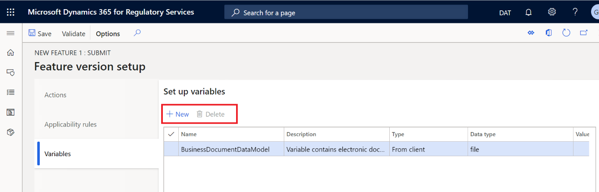
In der folgenden Tabelle werden die Felder beschrieben, die auf der Registerkarte Variablen verfügbar sind.
| Feld | Beschreibung |
|---|---|
| Name | Der Name der Variablen. |
| Beschreibung | Eine kurze Beschreibung der Variable. |
| Typ | Der Typ der Variable:
|
| Datentyp | Der Datentyp der Variablen:
|
| Wert | Der Wert der Variablen oder der Name der Aktion, die den Wert der Variablen festlegt. |
Überprüfen der Funktionseinrichtung
Wählen Sie auf der Seite Einrichtung der Funktionsversion im Aktivitätsbereich die Option Überprüfen aus, um die Einrichtung der Funktionsversion zu überprüfen.
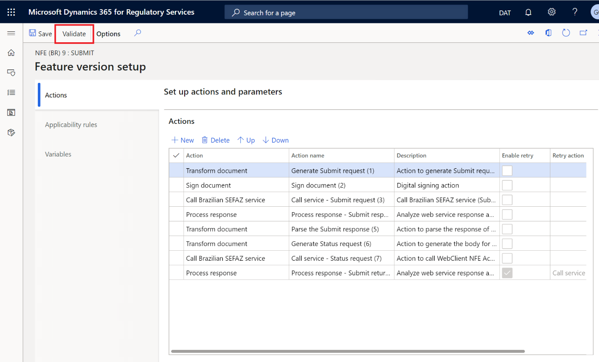
Die Validierung überprüft die Konsistenz der gesamten Konfiguration. Wenn beispielsweise ein bestimmter Parameter für eine Aktion obligatorisch ist, sein Wert jedoch leer bleibt, erkennt die Validierung diese Inkonsistenz und Sie erhalten eine Warnung.
Umgebungen
Eine Add-On-Umgebung für die elektronische Rechnungsstellung muss der Add-On-Funktion für die elektronische Rechnungsstellung zugeordnet und für diese aktiviert sein. Add-On-Umgebungen für die elektronische Rechnungsstellung müssen im Voraus erstellt und veröffentlicht werden, indem die Globalisierungsfunktionen im RCS-Konto Ihres Unternehmens konfiguriert werden.
Befolgen Sie diese Schritte, um eine Add-On-Umgebung für die elektronische Rechnungsstellung für die Add-On-Funktion für die elektronische Rechnungsstellung zu aktivieren.
- Wählen Sie auf der Seite Add-On-Funktionen für die elektronische Rechnungsstellung auf der Registerkarte Umgebungen die Option Aktivieren aus, um eine Add-On-Umgebung für die elektronische Rechnungsstellung hinzuzufügen.
- Wählen Sie im Feld Gültig ab das Datum aus, an dem die neue Umgebung wirksam wird.
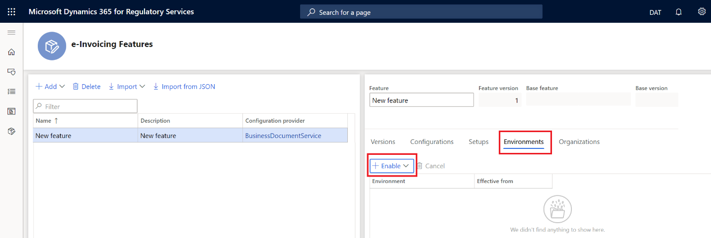
Organisation
Die Add-On-Funktion für die elektronische Rechnungsstellung kann von mehreren Organisationen gemeinsam genutzt werden.
- Wählen Sie auf der Seite Add-On-Funktionen für die elektronische Rechnungsstellung auf der Registerkarte Organisationen die Option Teilen mit aus, um die Organisation hinzuzufügen, mit der Sie die Add-On-Funktion für die elektronische Rechnungsstellung teilen möchten.
Wählen Sie Freigabe aufheben aus, um die Freigabe der Add-On-Funktion für die elektronische Rechnungsstellung für die Organisation zu beenden.
Versionen
Mit Versionen können Sie den Lebenszyklus der Add-On-Funktion für die elektronische Rechnungsstellung steuern, indem Sie ihren Status verwalten. Sie können eine neue Version einer vorhandenen Add-On-Funktion für die elektronische Rechnungsstellung erstellen. Alternativ können Sie, wenn die gesamte Konfiguration für die Add-On-Funktion für die elektronische Rechnungsstellung abgeschlossen ist, den Status der Funktion in Abgeschlossen und dann in Veröffentlichen ändern.
Erstellen einer neuen Version einer vorhandenen Add-On-Funktion für die elektronische Rechnungsstellung
- Wählen Sie auf der Seite Add-On-Funktionen für die elektronische Rechnungsstellung im Raster auf der linken Seite die Add-On-Funktion für die elektronische Rechnungsstellung aus.
- Wählen Sie auf der Registerkarte Versionen die Option Neu aus, um eine neue Version der Add-On-Funktion für die elektronische Rechnungsstellung hinzuzufügen.
Ändern des Status der Add-On-Funktion für die elektronische Rechnungsstellung
Befolgen Sie diese Schritte, um den Lebenszyklus der Add-On-Funktion für die elektronische Rechnungsstellung zu verwalten.
Wählen Sie auf der Seite Add-On-Funktionen für die elektronische Rechnungsstellung im Raster auf der linken Seite die Add-On-Funktion für die elektronische Rechnungsstellung aus.
Wählen Sie auf der Registerkarte Versionen die Option Status ändern aus und ändern Sie dann den Status von Entwurf zu Abgeschlossen.
Sie werden aufgefordert, zu bestätigen, dass Sie die Add-On-Funktion für die elektronische Rechnungsstellung und alle ihre Komponenten abschließen möchten. Wählen Sie Ja aus, um die Aktion zu bestätigen, oder Nein um sie abzubrechen.
Note
Wenn Sie Ja auswählen, wird der Status von Konfigurationsversionen, die Bestandteile der Add-On-Funktion für die elektronische Rechnungsstellung sind, automatisch von Entwurf zu Abgeschlossen geändert.
Wählen Sie Status ändern aus und ändern Sie dann den Status von Abgeschlossen zu Veröffentlichen.
Sie werden aufgefordert, zu bestätigen, dass Sie die Add-On-Funktion für die elektronische Rechnungsstellung und alle ihre Komponenten im globalen Repository veröffentlichen möchten. Wählen Sie Ja aus, um die Aktion zu bestätigen, oder Nein um sie abzubrechen.
Note
Wenn Sie Ja auswählen, wird der Status von Konfigurationsversionen automatisch von Abgeschlossen zu Freigegeben geändert.